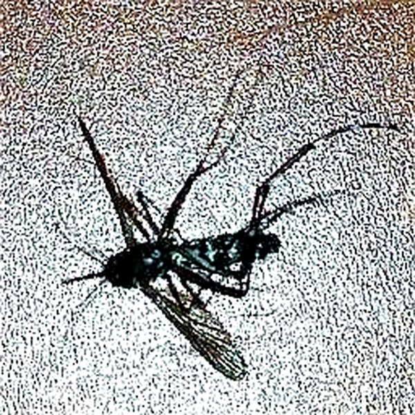
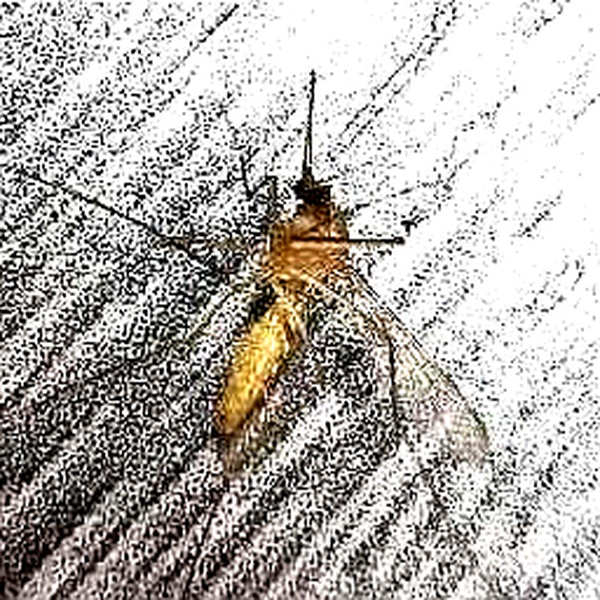
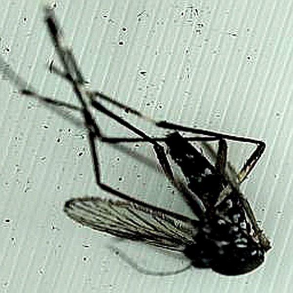
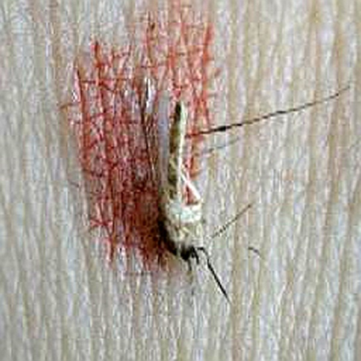
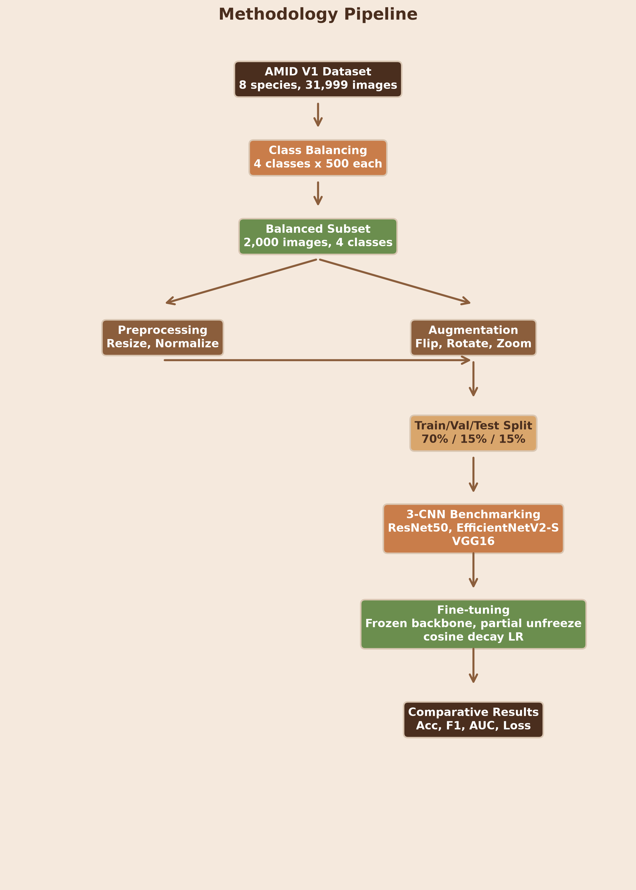
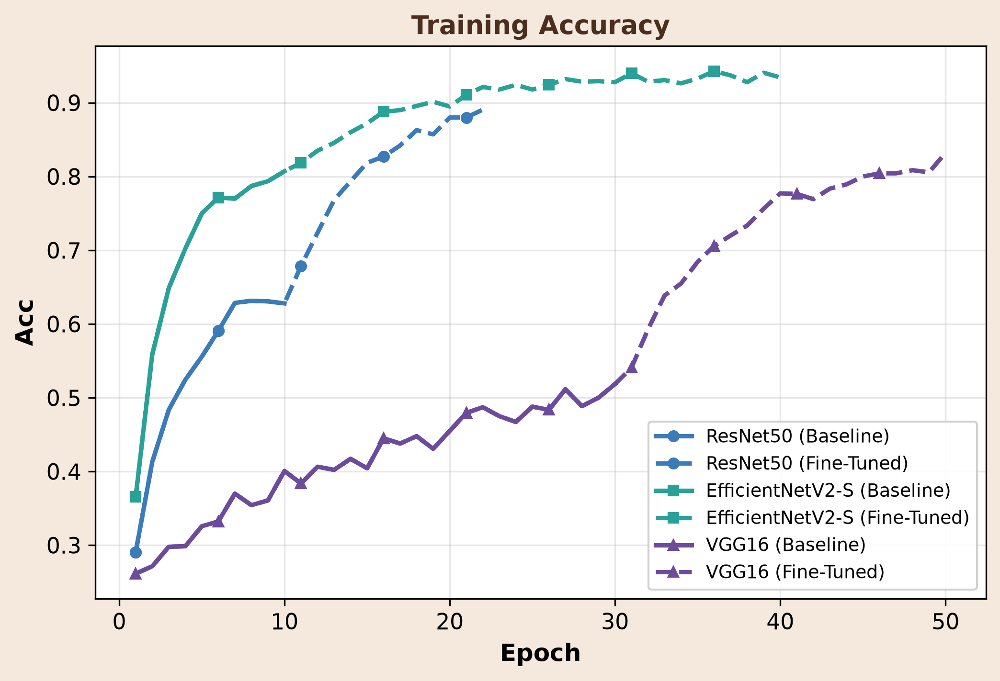
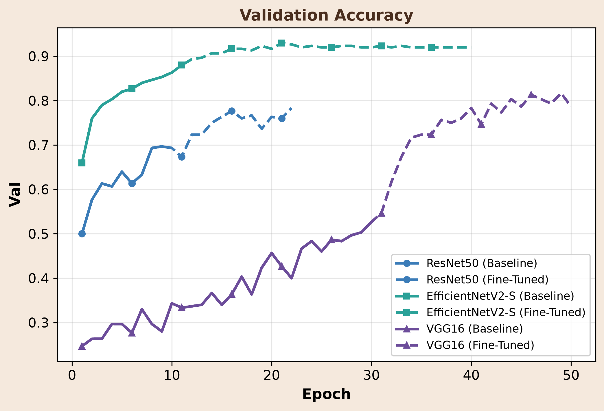
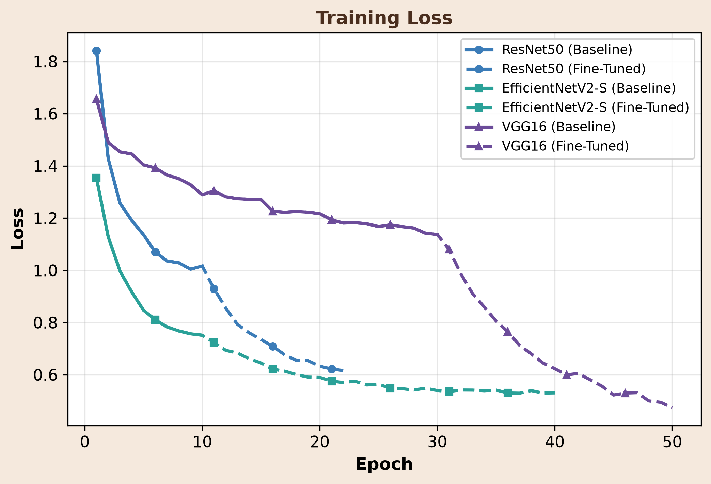
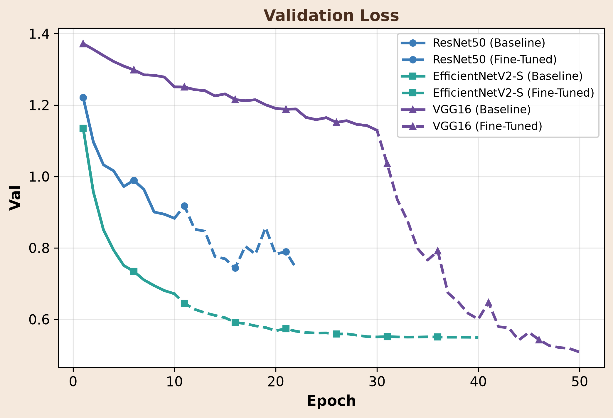

In recent years, mosquito-borne diseases have become an increasingly serious global health problem. Of more than 3,700 mosquito species worldwide, only a small subset act as disease vectors. However, this small group account for most vector-borne infections: Aedes mosquitoes commonly transmit dengue, Anopheles transport malaria, and Culex linked to West Nile and other viral diseases. The WHO reported over 14.4 million dengue cases globally in 2024, while the World Malaria Report 2025 estimated 282 million malaria cases and roughly 610,000 deaths worldwide. The country experienced its worst dengue outbreak in 2023, with 321,179 reported cases and 1,705 deaths [3]. In addition to spending at least Tk5,476 crore annually on mosquito prevention, Bangladesh faces high dengue treatment costs averaging BDT 33,817 per household, alongside BDT 6,076 per patient spent directly by public hospitals.
Timely, accurate species identification is essential for disease prevention and localized vector control. However, following traditional identification, even trained experts misidentify adult mosquitoes roughly 18% of the time [4]. Similarly, DNA-based techniques improve accuracy but require expensive laboratory infrastructure. Convolutional Neural Networks (CNNs) offer a scalable, cost-effective alternative for species recognition, but most studies rely on generic and foreign datasets that do not reflect the distinct morphological and ecological characteristics of Bangladeshi mosquito populations.




Aim: Benchmark three CNN architectures on a balanced 4-class subset of the AMID V1 Bangladeshi mosquito dataset and demonstrate that careful class selection and dataset balancing are critical for reliable species-level classification.
Three ImageNet-pretrained CNN backbones — ResNet50, EfficientNetV2-S, and VGG16 — were fine-tuned on a balanced 2,000-image AMID V1 subset (4 classes, 500 each) using stratified 70/15/15 train–validation–test splits on Google Colab.

Among the three architectures evaluated on the balanced 4-class AMID V1 dataset, fine-tuned EfficientNetV2-S achieved the best overall performance, with test accuracy reaching 92.00% and macro-F1 at 91.93%. VGG16 showed the most dramatic improvement, with test accuracy rising from 52.67% baseline to 83.33% after fine-tuning and macro-F1 improving from 42.88% to 82.97%. ResNet50 achieved 77.67% accuracy with strong ROC-AUC of 96.01% but the least gain from fine-tuning.




| Model | Base Acc. | FT Acc. | Base F1 | FT F1 | AUC |
|---|---|---|---|---|---|
| ResNet50 | 69.87% | 77.67% | 68.44% | 76.53% | 0.9601 |
| EfficientNetV2-S | 86.33% | 92.00% | 85.96% | 91.93% | 0.9932 |
| VGG16 | 52.67% | 83.33% | 42.88% | 82.97% | 0.9620 |
This comparative benchmark advances local disease vector identification through cost-effective, AI-driven surveillance that empowers public health authorities with earlier outbreak detection. Ultimately, it expands the frontier of medical AI innovation by demonstrating how deep learning can tackle high-impact public health challenges in resource-constrained environments.